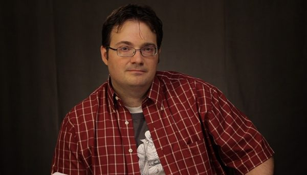

|  | Brandon Sanderson Brandon Sanderson (Lincoln, Nebraska, 19 de diciembre de 1975) es un escritor estadounidense de literatura fantástica. Nacido en Nebraska,1 Es mormón.2 Actualmente reside en Provo, Utah, con su mujer Emily, con la que contrajo matrimonio el 7 de julio de 2006.3 Obtuvo un máster en literatura creativa en 2005 en la Brigham Young University,4 donde fue compañero de habitación del campeón de Jeopardy! Ken Jennings.5 Ha sido nominado dos veces para el Premio John W. Campbell |
|